1. Versuch
Zamora et al., J. Manuf. Sci. Eng. 130 (2008) 051009, und Int. J. Adv. Manuf. Technol. 33 (2007) 266, nach den Arbeiten von López und Faura. Eine Gießkammer aus Plexiglas mit Wasser, Füllgrad 25,2 bis 50 %; der Kolben beschleunigt nach dem Gesetz von López. Fotografiert wurde die Welle vor dem Kolben bei verschiedenen Geschwindigkeiten, darunter die optimale Schusskurve und Fälle mit Wandstrahl.
2. Modell
Zwölf Einstellungen aus der Vorlage cases/shotSleeve, erzeugt von
scripts/setup_runs.py: Geometrie, Füllgrad, Kolbengesetz, Wasser und Luft, Ausgabe genau zu den
Zeiten der Fotos. Die Fotos der Quelle sind in paper/frames.json kalibriert.
3. Messgröße: Luft in der Kammer
Gemessen haben Zamora et al. mit einer Kamera (1000 Bilder je Sekunde) den Zeitpunkt $t_p$, zu dem das Wasser in den Anschnitt oben an der Stirnwand zu fließen beginnt. Aus dem Kolbenweg zu diesem Zeitpunkt folgt die Luft, die dann noch in der Kammer ist (Gl. 2 der Quelle):
Die Werte (Abb. 9, Quadrate) sind digitalisiert in paper/measurements/; die Kreuze derselben
Abbildung sind Rechnungen der Autoren und werden nicht verwendet. In der Rechnung ist $t_p$ der erste
Zeitschritt, in dem Wasser hinter der Stirnwand ist. Das Fenster der Stirnwand reicht im Modell bis 0,53 R über
die Achse, tiefer als der Anschnitt im Versuch; der gerechnete Wert ist daher eine obere Schranke.
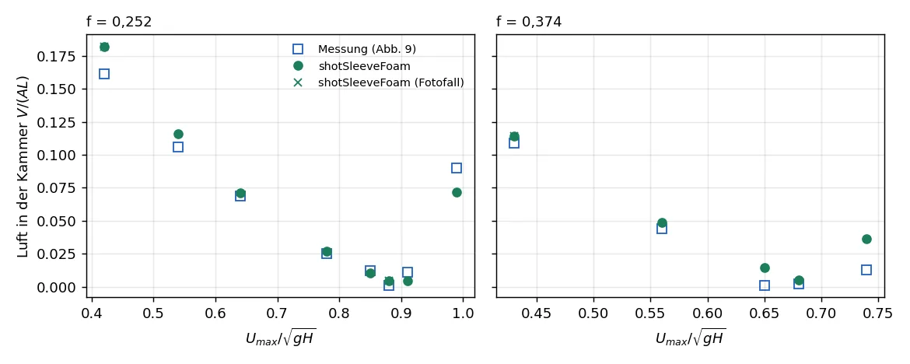
| Rechnung | f | U* | Messung V/(AL) | Rechnung V/(AL) |
|---|---|---|---|---|
air_f0252_U042 | 0,252 | 0,42 | 0,161 | 0,182 |
vis_f0252_U042 | 0,252 | 0,42 | 0,161 | 0,182 |
air_f0252_U054 | 0,252 | 0,54 | 0,106 | 0,116 |
air_f0252_U064 | 0,252 | 0,64 | 0,069 | 0,071 |
air_f0252_U078 | 0,252 | 0,78 | 0,025 | 0,027 |
air_f0252_U085 | 0,252 | 0,85 | 0,012 | 0,010 |
air_f0252_U088 | 0,252 | 0,88 | 0,001 | 0,005 |
vis_f0252_U088 | 0,252 | 0,88 | 0,001 | 0,005 |
air_f0252_U091 | 0,252 | 0,91 | 0,011 | 0,005 |
air_f0252_U099 | 0,252 | 0,99 | 0,090 | 0,072 |
vis_f0252_U100 | 0,252 | 1,00 | 0,090 | n. b. |
air_f0374_U043 | 0,374 | 0,43 | 0,109 | 0,114 |
vis_f0374_U043 | 0,374 | 0,43 | 0,109 | 0,114 |
air_f0374_U056 | 0,374 | 0,56 | 0,044 | 0,049 |
air_f0374_U065 | 0,374 | 0,65 | 0,001 | 0,015 |
air_f0374_U068 | 0,374 | 0,68 | 0,002 | 0,005 |
air_f0374_U074 | 0,374 | 0,74 | 0,013 | 0,037 |
vis_f0374_U074 | 0,374 | 0,74 | 0,013 | n. b. |
Über alle 13 gemessenen Einstellungen liegt shotSleeveFoam im Mittel 0,005 über der Messung (RMSE 0,012,
größte Abweichung 0,024). Die Rechnung trifft den Abfall der Luft mit der Geschwindigkeit, das Optimum
(Füllgrad 0,252 bei $U^* \approx 0{,}88$, Füllgrad 0,374 bei $U^* \approx 0{,}65$ bis $0{,}68$) und den
Wiederanstieg darüber, wenn die Welle überschlägt. Bei 0,374 liegt das gerechnete Optimum etwas höher
(0,015 statt 0,001 bei $U^* = 0{,}65$). Die positive Abweichung passt zum Kriterium: das Fenster der Stirnwand
im Modell liegt tiefer als der Anschnitt, der Wert ist eine obere Schranke. Einstellungen am Solver waren
dafür nicht nötig; es gelten die Grundeinstellungen der Vorlage cases/shotSleeve.
4. Wellenform auf den Fotos
Jedes Bild zeigt nebeneinander das Foto der Quelle, die Rechnung zur selben Zeit im selben Ausschnitt ($x/L$, $y/H$; Schnitt in der senkrechten Symmetrieebene) und das Foto mit der gerechneten Oberfläche (Anteil 0,5, rot). In den Fotos der Quelle ist die Rechnung der Autoren als weiße Punktlinie eingezeichnet; diese Punkte sind entfernt, gezeigt wird nur der Versuch.
Eine Auswertung der Fotos wie bei Niida und Trometer ist hier nicht möglich: Wasser und Luft haben in diesen Aufnahmen fast denselben Grauwert, die Oberfläche ist nur stellenweise zu sehen, etwa als dunkler Saum entlang der steilen Welle. Verglichen wird deshalb die sichtbare Wellenform mit der gerechneten Linie; die Messgröße dieses Falls ist die eingeschlossene Luft (Abschnitt 3).
vis_f0252_U042: Füllgrad 0,252, U* = 0,42 (Abb. 6a)
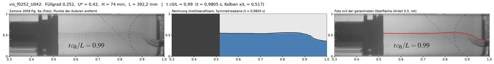
vis_f0252_U042: Foto ohne die Punkte der Autoren, Rechnung im selben Ausschnitt, Foto mit der gerechneten Oberfläche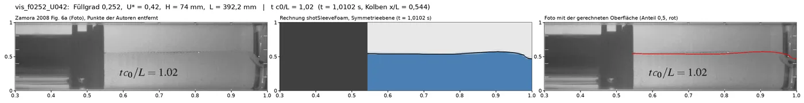
vis_f0252_U042: Foto ohne die Punkte der Autoren, Rechnung im selben Ausschnitt, Foto mit der gerechneten Oberflächevis_f0252_U042: Foto ohne die Punkte der Autoren, Rechnung im selben Ausschnitt, Foto mit der gerechneten Oberfläche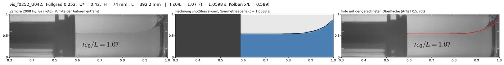
vis_f0252_U042: Foto ohne die Punkte der Autoren, Rechnung im selben Ausschnitt, Foto mit der gerechneten Oberflächevis_f0252_U100: Füllgrad 0,252, U* = 1,00 (Abb. 6b)
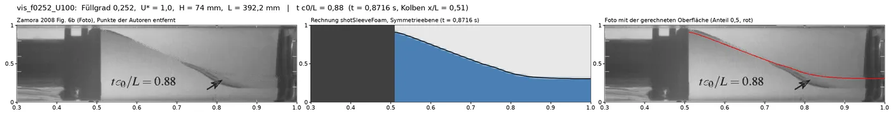
vis_f0252_U100: Foto ohne die Punkte der Autoren, Rechnung im selben Ausschnitt, Foto mit der gerechneten Oberfläche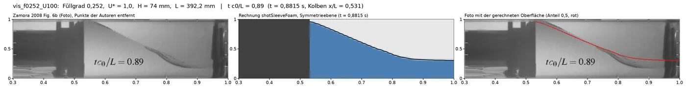
vis_f0252_U100: Foto ohne die Punkte der Autoren, Rechnung im selben Ausschnitt, Foto mit der gerechneten Oberfläche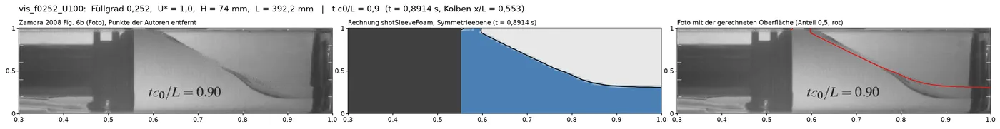
vis_f0252_U100: Foto ohne die Punkte der Autoren, Rechnung im selben Ausschnitt, Foto mit der gerechneten Oberfläche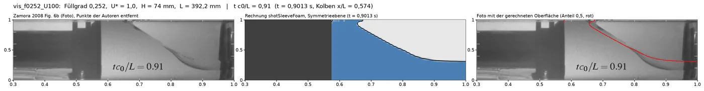
vis_f0252_U100: Foto ohne die Punkte der Autoren, Rechnung im selben Ausschnitt, Foto mit der gerechneten Oberfläche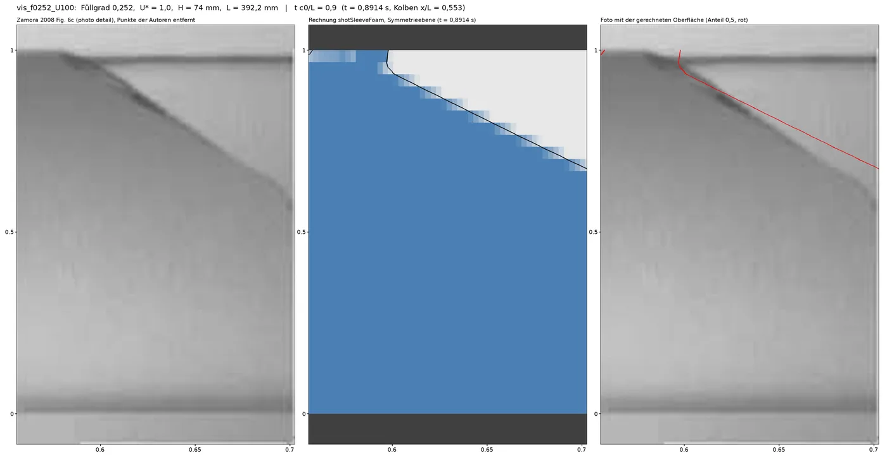
vis_f0252_U100: Foto ohne die Punkte der Autoren, Rechnung im selben Ausschnitt, Foto mit der gerechneten Oberfläche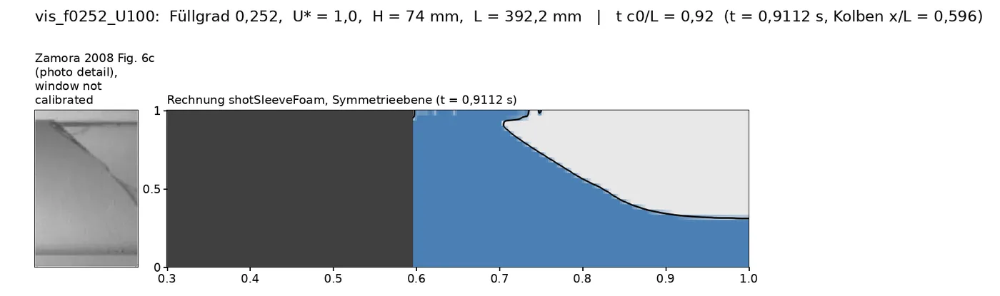
vis_f0252_U100: Foto ohne die Punkte der Autoren, Rechnung im selben Ausschnitt, Foto mit der gerechneten Oberfläche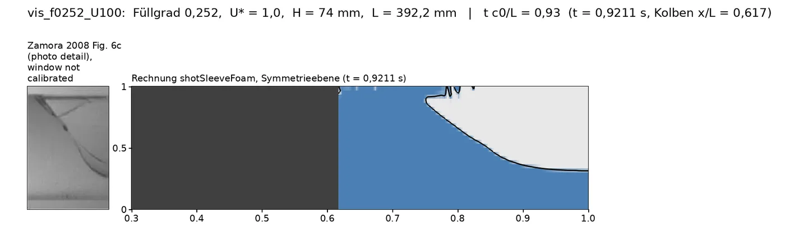
vis_f0252_U100: Foto ohne die Punkte der Autoren, Rechnung im selben Ausschnitt, Foto mit der gerechneten Oberfläche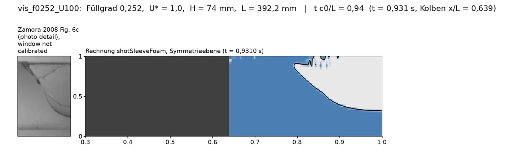
vis_f0252_U100: Foto ohne die Punkte der Autoren, Rechnung im selben Ausschnitt, Foto mit der gerechneten Oberfläche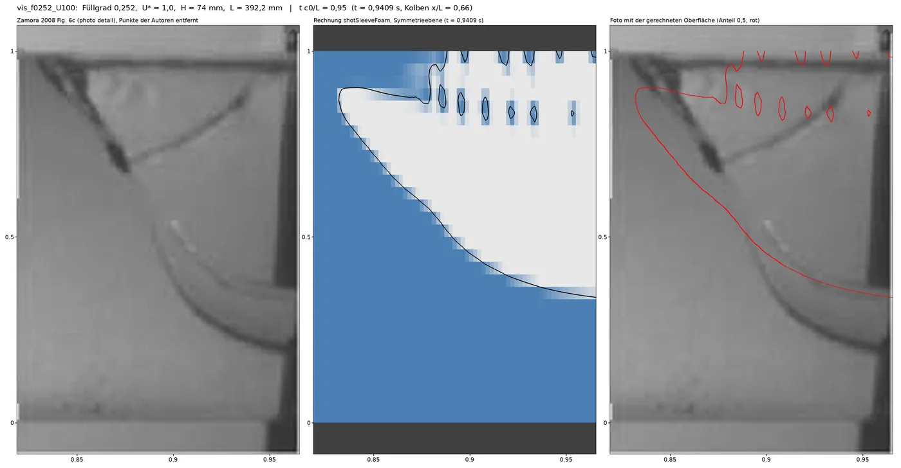
vis_f0252_U100: Foto ohne die Punkte der Autoren, Rechnung im selben Ausschnitt, Foto mit der gerechneten Oberflächevis_f0252_U088: Füllgrad 0,252, U* = 0,88, Optimum (Abb. 8)
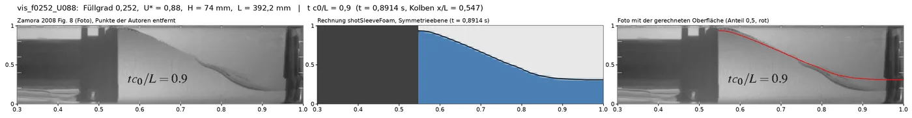
vis_f0252_U088: Foto ohne die Punkte der Autoren, Rechnung im selben Ausschnitt, Foto mit der gerechneten Oberfläche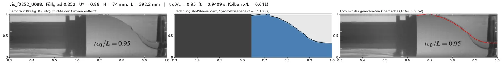
vis_f0252_U088: Foto ohne die Punkte der Autoren, Rechnung im selben Ausschnitt, Foto mit der gerechneten Oberfläche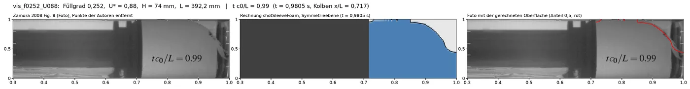
vis_f0252_U088: Foto ohne die Punkte der Autoren, Rechnung im selben Ausschnitt, Foto mit der gerechneten Oberfläche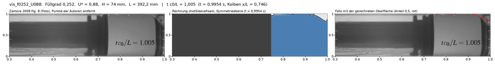
vis_f0252_U088: Foto ohne die Punkte der Autoren, Rechnung im selben Ausschnitt, Foto mit der gerechneten Oberflächevis_f0374_U043: Füllgrad 0,374, U* = 0,43 (Abb. 7a)
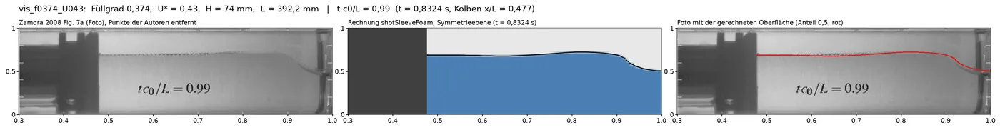
vis_f0374_U043: Foto ohne die Punkte der Autoren, Rechnung im selben Ausschnitt, Foto mit der gerechneten Oberflächevis_f0374_U043: Foto ohne die Punkte der Autoren, Rechnung im selben Ausschnitt, Foto mit der gerechneten Oberfläche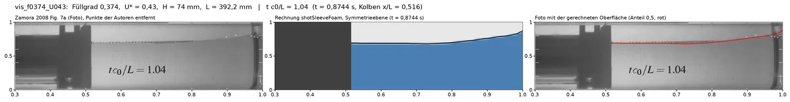
vis_f0374_U043: Foto ohne die Punkte der Autoren, Rechnung im selben Ausschnitt, Foto mit der gerechneten Oberfläche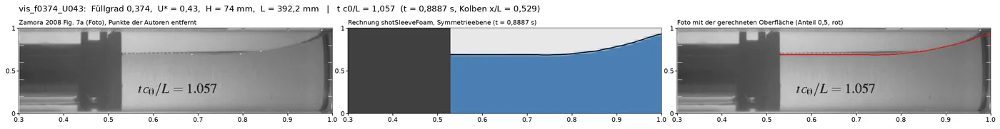
vis_f0374_U043: Foto ohne die Punkte der Autoren, Rechnung im selben Ausschnitt, Foto mit der gerechneten Oberflächevis_f0374_U074: Füllgrad 0,374, U* = 0,74 (Abb. 7b)
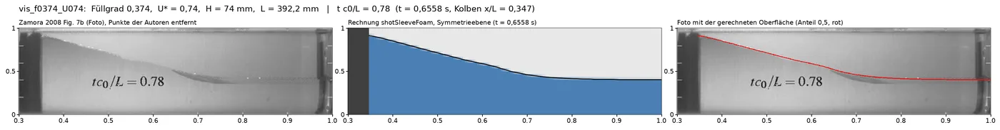
vis_f0374_U074: Foto ohne die Punkte der Autoren, Rechnung im selben Ausschnitt, Foto mit der gerechneten Oberfläche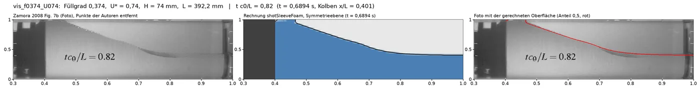
vis_f0374_U074: Foto ohne die Punkte der Autoren, Rechnung im selben Ausschnitt, Foto mit der gerechneten Oberfläche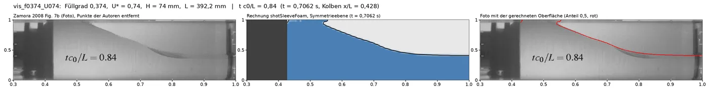
vis_f0374_U074: Foto ohne die Punkte der Autoren, Rechnung im selben Ausschnitt, Foto mit der gerechneten Oberfläche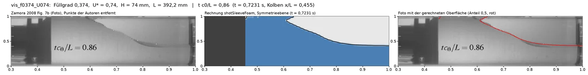
vis_f0374_U074: Foto ohne die Punkte der Autoren, Rechnung im selben Ausschnitt, Foto mit der gerechneten Oberfläche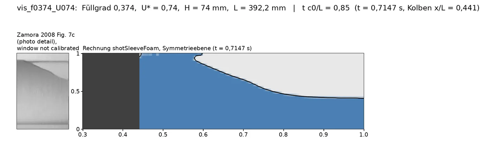
vis_f0374_U074: Foto ohne die Punkte der Autoren, Rechnung im selben Ausschnitt, Foto mit der gerechneten Oberfläche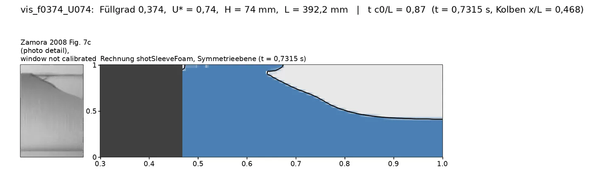
vis_f0374_U074: Foto ohne die Punkte der Autoren, Rechnung im selben Ausschnitt, Foto mit der gerechneten Oberfläche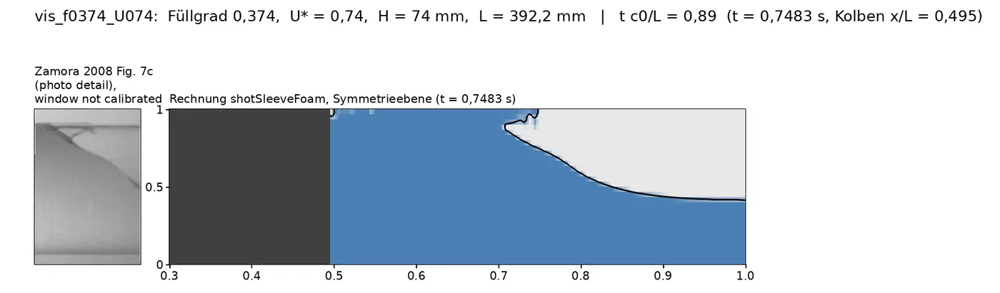
vis_f0374_U074: Foto ohne die Punkte der Autoren, Rechnung im selben Ausschnitt, Foto mit der gerechneten Oberfläche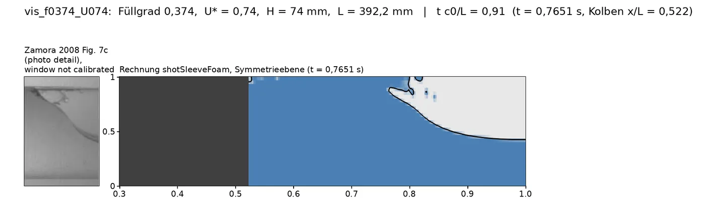
vis_f0374_U074: Foto ohne die Punkte der Autoren, Rechnung im selben Ausschnitt, Foto mit der gerechneten Oberfläche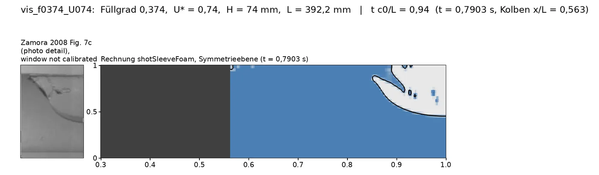
vis_f0374_U074: Foto ohne die Punkte der Autoren, Rechnung im selben Ausschnitt, Foto mit der gerechneten Oberfläche